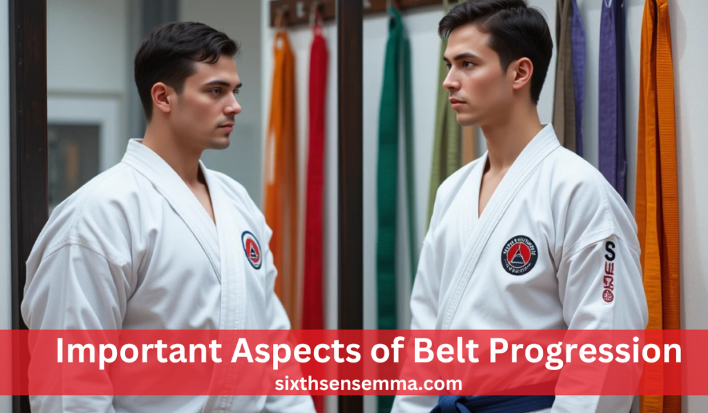
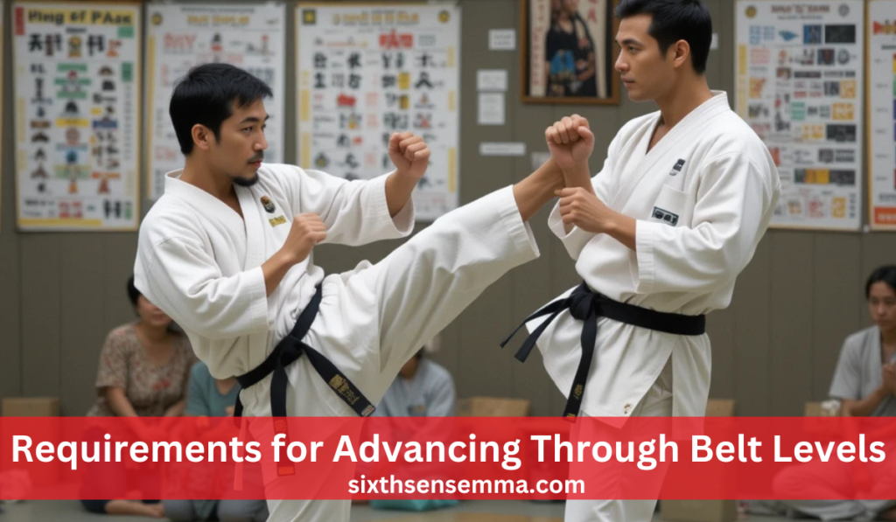
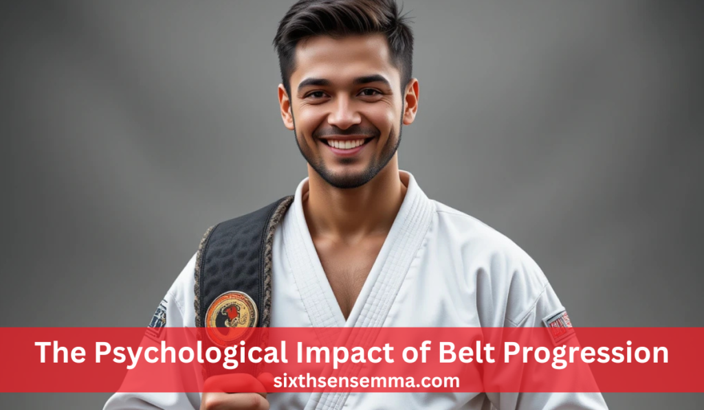

Martial Arts Belt Levels: Colors, Meanings, and Progression

Martial Arts Belt Levels serve as visual markers of a practitioner’s journey, symbolizing their progress and skill development. Each belt color represents a specific stage, showcasing the student’s experience and mastery. Different martial arts disciplines follow unique belt systems with distinct colors and progression paths. These belts not only signify rank but also instill discipline and motivation in practitioners. Advancing through belt levels requires dedication, rigorous training, and a deep understanding of martial arts techniques.
Why do martial arts use a belt ranking system?
The belt ranking system helps track a practitioner’s progress, instills discipline, and provides motivation by setting clear goals for skill development and mastery.
Important Aspects of Belt Progression
Origin and Purpose of Belt Ranking Systems
The belt ranking system was first introduced by Dr.The late 19th-century originator of Judo, Ji. Initially, this system had only two belts white for beginners and black for advanced practitioners. The idea was to differentiate between students who were just starting and those who had mastered the art.
Common Belt Colors and Their Meanings
Each belt color in martial arts has a special meaning. The white belt represents a beginner who is new to martial arts and ready to learn. As students gain knowledge, they earn the yellow belt, which symbolizes the first rays of understanding, like sunlight bringing new growth. The orange belt shows that a student is gaining energy and enthusiasm in their practice. The green belt represents steady growth, similar to how a plant becomes stronger over time
Belt Progression in Different Martial Arts Styles
Different martial arts styles follow their own belt ranking systems. In Karate, the common order of belts is White, Yellow, Orange, Green, Blue, Purple, Brown, and Black. Each belt requires students to master specific techniques and forms before they can progress. Judo has a similar system, with White, Yellow, Orange, Green, Blue, Brown, and Black belts, but progression is often based on both technical skill and performance in competitions.
How to Move Up in Belt Levels
Advancing through belt levels requires dedication, practice, and meeting specific requirements. Most martial arts schools have a minimum training period for each belt level to ensure that students gain enough experience before moving forward. In addition to time, students must also pass skill tests where they demonstrate their techniques, forms, and sparring abilities. Some martial arts styles also include knowledge tests, where students must show an understanding of martial arts history and philosophy.
Comprehensive Overview
Purpose and Significance of Belt Colors
Belt colors are more than just symbols of rank; they represent a martial artist’s journey, progress, and achievements. Advancing through different colors helps students stay motivated by giving them clear goals to work toward. Each new belt marks a step forward in learning and skill development. While many martial arts styles share a similar ranking structure, the specific meanings and sequences of belt colors can vary. These differences often reflect the cultural and philosophical values of each Martial Arts Belt Levels emphasizing discipline, respect, and continuous self-improvement.
Common Belt Colors and Their Meanings
The white belt represents a beginner with an open and pure mind, ready to learn. It marks the starting point of the martial arts journey, where students begin developing discipline and foundational skills.
The yellow belt symbolizes the first rays of knowledge shining upon the student. At this stage, practitioners start to understand basic techniques, laying the groundwork for future progress.
The orange belt signifies growth in knowledge and expanding skills. Students at this level gain more confidence in their fundamental techniques and begin refining their movements.
The green belt represents continuous growth and development in martial arts proficiency. It shows that the student is advancing beyond the basics and is now learning more complex techniques and strategies.
The blue belt reflects a deeper understanding and greater control of martial arts techniques. This stage represents the student’s journey into more advanced training, focusing on precision and strategy.
The purple belt indicates a higher level of skill, experience, and commitment. Students at this stage prepare for advanced ranks, take on greater responsibilities, and refine their abilities.
The brown belt symbolizes maturity and mastery of advanced techniques. It represents a student who has developed a strong foundation and is ready to transition into expert-level training.
The black belt is a sign of proficiency, expertise, and deep understanding of the martial art. However, it is not the end of the journey but rather a new beginning, where students continue exploring and mastering the art on a deeper level.
Variations in Belt Systems Across Martial Arts Disciplines
Different martial arts disciplines have developed their own unique belt ranking systems, each with its own progression path, requirements, and philosophies. While most styles use belts to signify a student’s progress, the exact colors, sequences, and promotion criteria vary depending on the martial art.
Karate
In Karate, the belt system generally follows the order of White, Yellow, Orange, Green, Blue, Purple, Brown, and Black. Each level signifies a student’s growth in skill, discipline, and understanding of the art. To progress, students must demonstrate mastery of specific techniques, forms (known as katas), and sparring abilities.
Judo
In Judo, the belt sequence typically includes White, Yellow, Orange, Green, Blue, Brown, and Black belts. Unlike some martial arts that focus heavily on striking, Judo places a strong emphasis on throws, holds, and ground control techniques. Advancement is determined by a student’s technical proficiency, ability to execute throws and holds effectively, and competition experience.
Taekwondo
Taekwondo features a slightly different belt system, usually progressing through White, Yellow, Green, Blue, Red, and Black belts. A key element of Taekwondo training is poomsae (patterns), sparring, and breaking techniques, which must be mastered at each level. Some schools also incorporate stripes or tags within belt levels to indicate smaller stages of progress.
Hapkido
Hapkido uses a belt ranking system that often includes White, Yellow, Orange, Green, Blue, Brown, Red, and Black belts. This Martial Arts Belt Levels is unique because it combines elements of striking, joint locks, throws, and self-defense techniques. Advancement through the ranks requires students to demonstrate effective self-defense applications, joint manipulations, throws, and forms.
Variations in Belt Systems Across Martial Arts Disciplines
| Martial Art | Belt Order | Key Requirements for Advancement |
|---|---|---|
| Karate | White → Yellow → Orange → Green → Blue → Purple → Brown → Black | Mastery of techniques, forms (katas), and sparring skills |
| Judo | White → Yellow → Orange → Green → Blue → Brown → Black | Technical proficiency, expertise in throws and holds, and competition experience |
| Taekwondo | White → Yellow → Green → Blue → Red → Black | Learning poomsae (patterns), sparring, and breaking techniques; some schools use stripes or tags for intermediate stages |
| Hapkido | White → Yellow → Orange → Green → Blue → Brown → Red → Black | Demonstration of self-defense techniques, joint locks, throws, and forms |
This table makes it easy to compare how different Martial Arts Belt Levels approach their belt ranking systems and progression requirements.
Requirements for Advancing Through Belt Levels

Progressing through the ranks in martial arts is not just about wearing a new belt—it is a reflection of a student’s dedication, discipline, and continuous improvement.
Training Duration
Each belt level requires students to spend a minimum period training before they are eligible for promotion. This ensures that they have sufficient time to practice, develop muscle memory, and refine their techniques. The time required varies between Martial Arts Belt Levels styles and schools, but lower ranks typically require a few months, while higher ranks, such as brown and black belts, may take several years to achieve.
Technical Skills
Martial Arts Belt Levels training emphasizes the mastery of techniques appropriate for each belt level. Students must demonstrate proficiency in stances, strikes, blocks, kicks, throws, and defensive maneuvers, depending on the style they practice.
Knowledge Assessments
Beyond physical ability, students must also develop an understanding of martial arts philosophy, history, and principles. Some martial arts schools require students to pass written or oral exams covering topics such as the origins of their martial art, ethical codes, and the meaning behind their techniques.
Demonstrations and Belt Examinations
Before earning a new belt, students must undergo belt examinations, where they showcase the skills and knowledge they have gained. These exams typically include technical demonstrations, sparring sessions, self-defense applications, and endurance tests.
Requirements for Advancing Through Belt Levels
| Requirement | Description |
|---|---|
| Training Duration | Students must spend a minimum time at each belt level to ensure they get enough practice and experience before advancing. The time required varies by discipline, with higher belts often taking years to achieve. |
| Technical Skills | Proficiency in stances, strikes, blocks, kicks, throws, and defensive techniques is essential. Students must also master forms (katas or poomsae) and demonstrate improved speed, control, and accuracy. |
| Knowledge Assessments | Understanding of martial arts history, philosophy, and principles is required. Some schools conduct written or oral exams to test a student’s knowledge about techniques and their applications. |
| Demonstrations and Belt Examinations | Students must pass a belt exam, where they showcase their progress through technical demonstrations, sparring, self-defense drills, and sometimes breaking techniques. This proves their readiness to move to the next level. |
This table makes it easy to see what is required for a martial artist to progress through belt ranks.
The Role of Belt Testing and Examinations
Belt testing is a formal and structured process designed to evaluate a student’s skills, knowledge, and overall readiness for the next level. It ensures that students have met the necessary technical, physical, and mental requirements before advancing.
Key Components of Belt Testing
Technical Demonstrations
Students must perform required techniques, stances, forms (katas or poomsae), and drills with accuracy and control.
Sparring Sessions
It allows students to apply their techniques in controlled combat scenarios, demonstrating timing, strategy, adaptability, and self-control.
Theoretical Knowledge
Many Martial Arts Belt Levels schools incorporate an oral or written examination as part of belt testing. This assesses the student’s understanding of martial arts principles, history, philosophy, and terminology.
Evaluation and Feedback
During the testing process, instructors and senior evaluators carefully assess the student’s strengths, weaknesses, and areas for improvement. Feedback is provided to help students refine their skills and prepare for the increased responsibilities associated with higher ranks.
The Psychological Impact of Belt Progression

Earning a new belt is not just a physical achievement—it has a significant psychological and emotional impact on a student’s development. The structured belt system serves as a powerful motivator, fostering a sense of purpose and direction.
Boosting Confidence and Self-Esteem
Every belt earned is a symbol of progress, dedication, and hard work. Moving up the ranks gives students tangible recognition of their efforts, reinforcing their self-confidence and motivating them to continue striving for excellence.
Developing Resilience and Perseverance
Martial Arts Belt Levels training is filled with challenges, setbacks, and moments of struggle. Whether it’s failing a belt test, struggling with a difficult technique, or facing a stronger opponent, students learn to push past obstacles and keep improving.
Fostering Discipline and Goal-Setting
The belt system instills a strong sense of discipline and goal-setting. Students must commit to regular training, stay focused, and push themselves to meet the requirements for advancement. Each belt serves as a short-term goal, while the black belt represents a long-term aspiration.
Sense of Accomplishment and Growth
As students advance through the belt ranks, they experience a deep sense of accomplishment. The journey fosters self-awareness, humility, and a greater appreciation for the martial arts discipline they are studying.
Conclusion
The Martial Arts Belt Levels is more than just a ranking structure it is a symbolic journey of growth, discipline, and mastery. Originating from Judo founder Dr. Jigoro Kano, the system has evolved across different martial arts disciplines, incorporating various belt colors to represent progression in skill, knowledge, and experience. Each belt carries deep meaning, signifying not only technical proficiency but also mental and personal development.
FAQ's
The best martial art for beginners depends on personal goals and preferences. Brazilian Jiu-Jitsu (BJJ) is favored for its focus on technique, making it accessible for all. Karate is also a strong choice, emphasizing basic movements and self-discipline. It’s beneficial for beginners to try different classes to find what suits them best.
There is no age limit for starting martial arts! People of all ages can benefit from training. Many schools offer adult classes that cater to newcomers, allowing them to learn at their own pace and enjoy the physical and mental benefits of martial arts.
The cost of martial arts training varies by school, location, and class types. Many schools offer flexible pricing, including monthly memberships or per-class fees. It’s wise to explore different options to find a budget-friendly school that meets your needs.
Participation costs typically range from $100 to $150 per month for memberships, with per-class rates between $15 and $30. Annual memberships may be available for $800 to $1,200, often providing savings. Additionally, consider any extra fees for uniforms and equipment.
For your first day, wear comfortable athletic clothing. Most schools will provide a uniform (like a gi) for you to wear once you enroll, but you want to be ready to move in whatever you choose! Just check with the school beforehand to see if they have any specific requirements.
The time it takes to earn a belt varies widely based on the martial art and your dedication. Generally, it can range from 3 months to several years. Factors influencing this timeline include attendance, effort, and the specific belt progression system of the style you are learning.
Absolutely! Martial arts classes are intended for all fitness levels. Many schools offer beginner programs that help you gradually build your strength and flexibility, so don’t worry if you’re starting from scratch!
Train with us in Coppell
The first class is free. Shorts, a t-shirt and a water bottle. We lend the rest.
Book a free class